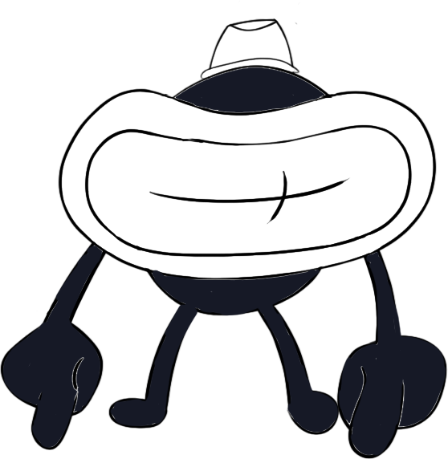

Designing the Game
Context
Foxy Birds is a personal side project and revamp of my 2018 mobile iOS game Foxy Birds. The game is an endless-runner-style mobile experience that I designed and developed independently during my final semester of university in the fall of 2019. I knew how I wanted the game to work, based on the feedback I had gotten from the players of the original Foxy Birds mobile game over the course of the year, so the implementation in Unity was pretty straightforward.

My main focus in making this game was to design an experience that would transport the player into a vintage, monochromatic, cartoon world that gives the feeling of being a part of an old-time 1920s TV show.
I was really excited to put my learnings from Foxy Birds version 1 to use, as well as my curiosity for different forms of creativity. I challenged myself to tackle every part of the game’s creation— from the hand-drawn artwork to the coding implementation, the animations and background music, as well as the experience design and game idea.
I was really excited to put my learnings from Foxy Birds version 1 to use, as well as my curiosity for different forms of creativity. I challenged myself to tackle every part of the game’s creation— from the hand-drawn artwork to the coding implementation, the animations and background music, as well as the experience design and game idea.